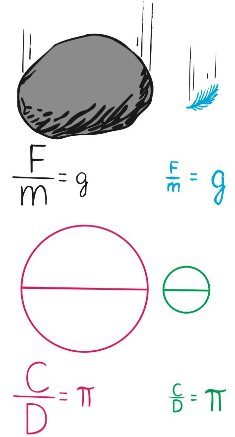

4.5 When Acceleration Is g—Free Fall
Although Galileo introduced the concepts of both inertia and acceleration, and although he was the first to measure the acceleration of falling objects, he could not explain why objects of different masses fall with equal accelerations. Newton’s second law provides the explanation.
We know that a falling object accelerates toward Earth because of the gravitational pull that Earth exerts on it. When the force of gravity is the only force acting on the object—that is, when friction (such as air resistance) is negligible—we say that the object is in a state of free fall.
The greater the mass of an object, the greater is the gravitational force of attraction between it and Earth. The double brick in Figure 4.12, for example, has twice the gravitational attraction of the single brick. Why, then, as Aristotle supposed, doesn’t the double brick fall twice as fast? The answer is that the acceleration of an object depends not only on force but also on the object’s resistance to motion, its inertia. Whereas a force produces an acceleration, inertia is a resistance to acceleration. So twice the force exerted on an object with twice the inertia produces the same acceleration as half the force exerted on an object with half the inertia. Both accelerate equally. The acceleration due to gravity is symbolized by g. We use the symbol g, rather than a, to denote that acceleration is due to gravity alone.

The ratio of gravitational force to mass for freely falling objects equals a constant—g. This is similar to the constant ratio of circumference to diameter for circles, which equals the constant π (Figure 4.13).

We now understand that the acceleration of free fall is independent of an object’s mass. A boulder 100 times more massive than a pebble falls with the same acceleration as the pebble because, although the gravitational pull on the boulder is 100 times greater than the force on the pebble, the boulder’s resistance to a change in motion (its mass) is 100 times that of the pebble. The greater force offsets the equally greater mass.